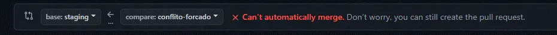
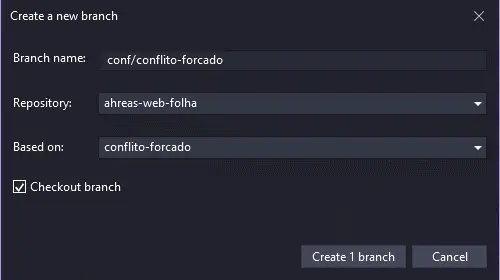
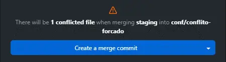
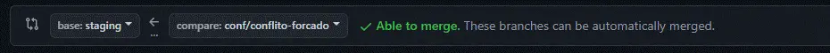

Sobre
O bit-flow é um fluxo para o git, que utiliza um único branch de desenvolvimento para otimizar o controle de branches em uma organização que utiliza ambientes de testes e produção, identificados a partir daqui como e respectivamente
Instalação
Nada aqui ainda
Feat
O que é um feat?
é um branch destinado a implementação de um recurso
Como implementar um feat?
- O desenvolvimento de um começa sempre com base no branch
- Ao concluir o desenvolvimento, deve-se criar um pull-request no branch
- Em caso de rejeição ou ajustes as alterações devem ser realizadas no próprio branch e criar um novo pull-request
- Quando aprovado deve-se criar um pull-request para seu respectivo
Fix
O que é um fix?
é um branch destinado a correções e ajustes
Como desenvolver um fix?
- O de uma ocorrência começa sempre com base no branch
- Ao concluir o desenvolvimento, deve-se criar um pull-request no branch
- Em caso de rejeição ou ajustes as alterações devem ser realizadas no próprio branch e criar um novo pull-request
- Quando aprovado deve-se criar um pull-request para seu respectivo
Release
O que é um release?
é um branch onde é preparada uma nova versão da aplicação
Como lançar um release?
- Uma nova versão começa sempre com base no branch
- Mergear nesse branch todos os braches que deseja liberar nesse
- Excluir os branches mergeados nesse , assim reduzindo a quantidade de branches existentes
- Caso necessite ajustes as alterações devem ser realizadas em um branch com base no branch e criar um novo pull-request
- Após validar deve-se criar um pull-request para os branches e
Release/Fix
O que é um release/fix?
é um branch exclusivo para correções e ajustes de um
Como corrigir um release?
- O de uma versão começa sempre com base no branch do respectivo
- Ao concluir o desenvolvimento, deve-se criar um pull-request no branch do respectivo
Conflitos
O que são conflitos?
Existência de alterações no mesmo bloco de código de um arquivo
Como solucionar conflitos?
-
A resolução de conflitos inicia ao tentar criar o pull-request de seu branch, e no comparativo é exibida a mensagem que não poderá ser mergeado automaticamente
-
Nesse momento devemos abandonar esse pull-request e criar um novo branch com base no seu branch, nomeando o mesmo no padrão de prefixo "conf/", assim o identificando como branch de conflito:
-
Já no novo branch iremos mergear a branch de destino e resolver os conflitos que surgirem
-
Após resolver os conflitos no novo branch, crie o pull-request do novo branch para o branch de destino, nesse momento não devem existir conflitos
Dicas
-
Nunca crie um branch com base em !
Caso seja necessário tenha em mente que seu branch vai conter todas as implementações da base, ou seja não poderá ser mergeado diretamente no branch , invalidando esse fluxo -
Nunca crie um pull-request para o branch !
Os branches a serem liberados devem compor um branch , pois esse será mergeado integralmente nos branches e
Download
- Gostou? faça o download desse fluxo e mantenha perto de você